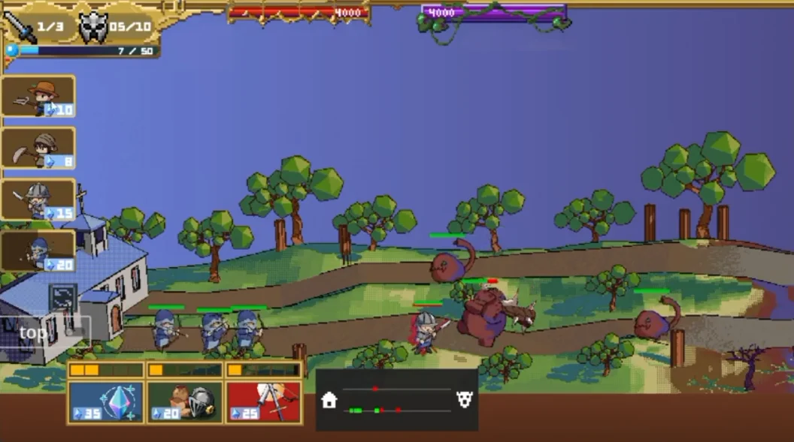

프로젝트
수원대학교 졸업 프로젝트 · 1인 개발. 커밋 163개(2023.11 — 2024.07 공개 레포 기준). 아군 11종, 적 8종 유닛.
여러 라인에서 유닛이 진격하고 맞붙는 횡스크롤 라인 오펜스입니다. 게임빌의 에르엘워즈를 레퍼런스로 삼았고, 유닛을 컴포넌트와 상태 노드로 조립하는 구조를 직접 설계했습니다. 1인 개발 졸업 프로젝트입니다.

수원대학교 졸업 프로젝트 · 1인 개발. 커밋 163개(2023.11 — 2024.07 공개 레포 기준). 아군 11종, 적 8종 유닛.
Godot 4 · GDScript · Path2D · Autoload 싱글톤 · JSON 세이브
컴포넌트 조립, 라인 격리, FSM 전환. 각 항목은 상황 → 결정 → 이유 → 한계 순서입니다.
레퍼런스와 장르 선택, 세이브 구조.